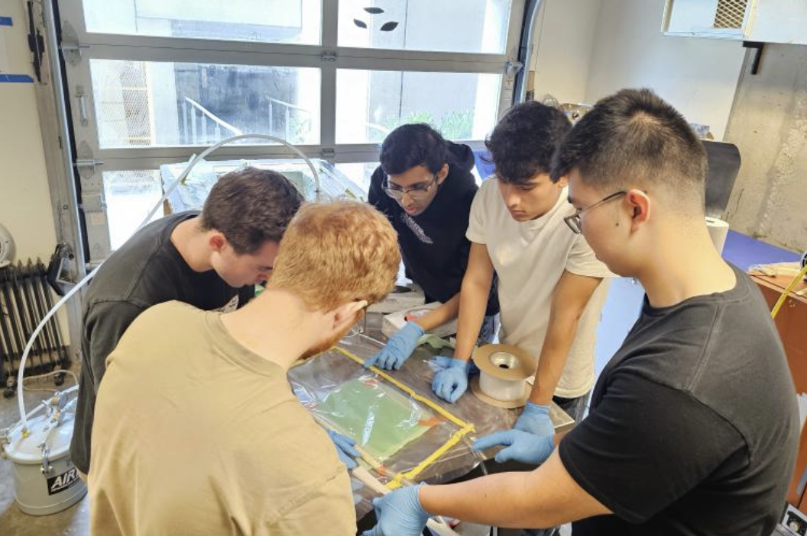

Battery Enclosure Vacuum Infusion Layups
UBC Thunderbikes - Oct 2023 to Nov 2023
Designed the battery enclosure to enhance structural safety, strength, and manufacturability of a 150V li-ion battery pack. Utilized skills in Vacuum Infusion and Wet Layups.
Key Highlights
- Conducted 3-Point Bend and Tensile tests on Carbon Fibre-Glass Fibre Composite panels to validate structural strength of enclosure in Ansys
- Conducted Hi-pot test on the enclosure to ensure the leakage current was minimal (in microamps)
- Waterjet the final enclosure panels and used epoxy adhesive to create a strong, heat resistance and watertight bond
- Created custom jig for panel alignment during adhesive cure
Tools Used
Instron Testing | Wet Layups | Vacuum Infusion | Adhesives | CAD | Hi-pot Testing